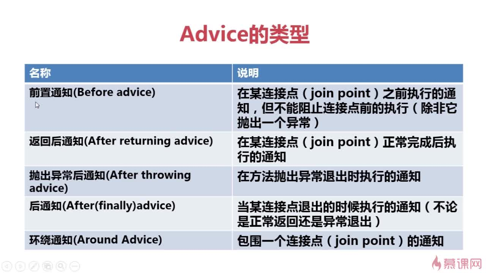
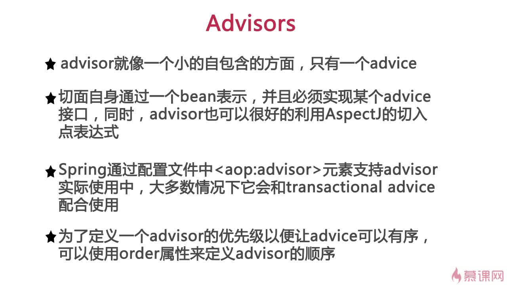
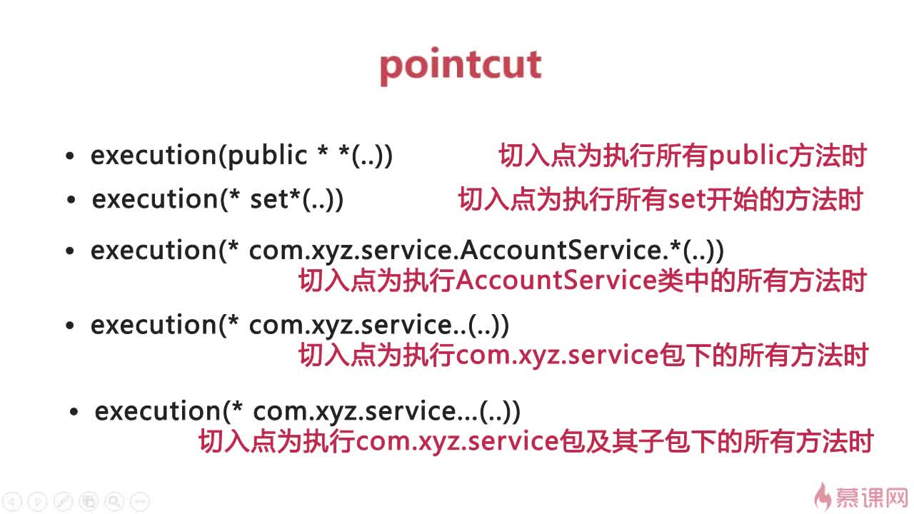

SpringAOP
AOP 相关概念

Advice 类型

Advisor

Pointcut


AOP 代理选择


AOP 注意事项

AOP XML 方式
示例代码：
业务类
package aop;
public class Mooc {
public void say() {
System.out.println("hello....imooc....");
}
public void exc() throws Exception {
System.out.println("throw...exception");
throw new RuntimeException("抛出一个异常");
}
public int add(int a, int b){
return a+b;
}
public int sub(int a, int b){
return a-b;
}
}
切面类
package aop;
import org.aspectj.lang.JoinPoint;
import org.aspectj.lang.ProceedingJoinPoint;
import org.aspectj.lang.Signature;
import java.util.Arrays;
import java.util.List;
//切面类
public class MoocAspect {
public void before(JoinPoint joinPoint) {
Signature signature = joinPoint.getSignature();
String methodName = signature.getDeclaringTypeName()+"_"+ signature.getName();
List<Object> args = Arrays.asList(joinPoint.getArgs());
System.out.println("MoocAspect....before method:"+methodName+ " args: " + args);
}
public void afterThrowing(JoinPoint joinPoint, Exception e) {
Signature signature = joinPoint.getSignature();
String methodName = signature.getDeclaringTypeName()+"_"+ signature.getName();
System.out.println("MoocAspect....after-throwing...method:"+methodName+" exception: "+e.getMessage());
}
public void after(JoinPoint joinPoint) {
Signature signature = joinPoint.getSignature();
String methodName = signature.getDeclaringTypeName()+"_"+ signature.getName();
System.out.println("MoocAspect....after the method:"+methodName);
}
public void afterReturning(JoinPoint joinPoint, Object returnValue) {
Signature signature = joinPoint.getSignature();
String methodName = signature.getDeclaringTypeName()+"_"+ signature.getName();
System.out.println("MoocAspect....afterReturning method:"+methodName+" returnValue:"+returnValue);
}
public Object around(ProceedingJoinPoint pjp, int a, int b) {
Object object = null;
System.out.println("Aspect....around: " + "a: " + a + " b: " + b);
try {
System.out.println("Aspect....around1");
object = pjp.proceed();
System.out.println("Aspect....around2");
} catch (Throwable e) {
e.printStackTrace();
}
return object;
}
}
xml
<?xml version="1.0" encoding="UTF-8"?>
<beans xmlns="http://www.springframework.org/schema/beans"
xmlns:xsi="http://www.w3.org/2001/XMLSchema-instance"
xmlns:aop="http://www.springframework.org/schema/aop"
xsi:schemaLocation="http://www.springframework.org/schema/beans
http://www.springframework.org/schema/beans/spring-beans.xsd
http://www.springframework.org/schema/aop
http://www.springframework.org/schema/aop/spring-aop-4.0.xsd">
<!-- 切面类 -->
<bean id="moocAspect" class="aop.MoocAspect"></bean>
<!-- 业务类 -->
<bean id="mooc" class="aop.Mooc"></bean>
<aop:config>
<aop:aspect id="moocAspectAOP" ref="moocAspect">
<aop:pointcut expression="execution(* aop.Mooc.*(..))" id="moocPointcut"/>
<aop:before method="before" pointcut-ref="moocPointcut"/>
<aop:after-returning method="afterReturning" returning="returnValue" pointcut-ref="moocPointcut"/>
<aop:after-throwing method="afterThrowing" throwing="e" pointcut-ref="moocPointcut"/>
<aop:after method="after" pointcut-ref="moocPointcut"/>
<aop:around method="around" pointcut="execution(* aop.Mooc.add(int, int)) and args(a,b)"/>
</aop:aspect>
</aop:config>
</beans>
AOP aspectj 方式
maven 依赖：
<dependency>
<groupId>org.aspectj</groupId>
<artifactId>aspectjrt</artifactId>
<version>1.8.5</version>
</dependency>
<dependency>
<groupId>org.aspectj</groupId>
<artifactId>aspectjweaver</artifactId>
<version>1.8.5</version>
</dependency>
xml 配置：
<?xml version="1.0" encoding="UTF-8"?>
<beans xmlns="http://www.springframework.org/schema/beans"
xmlns:xsi="http://www.w3.org/2001/XMLSchema-instance"
xmlns:context="http://www.springframework.org/schema/context"
xmlns:aop="http://www.springframework.org/schema/aop"
xsi:schemaLocation="http://www.springframework.org/schema/aop http://www.springframework.org/schema/aop/spring-aop-4.0.xsd
http://www.springframework.org/schema/beans http://www.springframework.org/schema/beans/spring-beans.xsd
http://www.springframework.org/schema/context http://www.springframework.org/schema/context/spring-context-4.0.xsd">
<context:component-scan base-package="aspect"></context:component-scan>
<aop:aspectj-autoproxy ></aop:aspectj-autoproxy>
</beans>
示例代码：
切面类
package aspect;
import org.aspectj.lang.JoinPoint;
import org.aspectj.lang.ProceedingJoinPoint;
import org.aspectj.lang.annotation.*;
import org.springframework.stereotype.Component;
import java.util.Arrays;
import java.util.List;
@Component
@Aspect
//排除自己
public class LogAspect {
//Aspectj切入点表达式 根据方法签名匹配
// 还有别的方式 扫描包，指定对象，含有注解(自定义注解)的类
@Pointcut("execution(* aspect.Calculator.*(..))")
public void log() {
}
@Before("log()")
public void before(JoinPoint joinPoint) {
String methodName = joinPoint.getSignature().getName();
List<Object> args = Arrays.asList(joinPoint.getArgs());
System.out.println("Before The method " + methodName + " begins " + args);
}
//后置通知
@After("log()")
public void afterMethod(JoinPoint joinPoint) {
String methodName = joinPoint.getSignature().getName();
List<Object> args = Arrays.asList(joinPoint.getArgs());
System.out.println("After The method " + methodName + " ends " + args);
}
@AfterReturning(pointcut = "log()", returning = "returnValue")
public void afterReturning(Object returnValue) {
System.out.println("afterReturning: " + returnValue);
}
@AfterThrowing(pointcut = "log()", throwing = "e")
public void afterThrowing(RuntimeException e) {
System.out.println("AfterThrowing: " + e.getMessage());
}
@Around("execution(* aspect.Calculator.add(int,int)) && args(a,b)")
public Object around(ProceedingJoinPoint proceedingJoinPoint, int a, int b) {
Object object = null;
System.out.println("Aspect....around: " + "a: " + a + " b: " + b);
try {
//执行被代理的方法
System.out.println("around1");
object = proceedingJoinPoint.proceed();
System.out.println("around2");
} catch (Throwable e) {
e.printStackTrace();
}
return object;
}
}